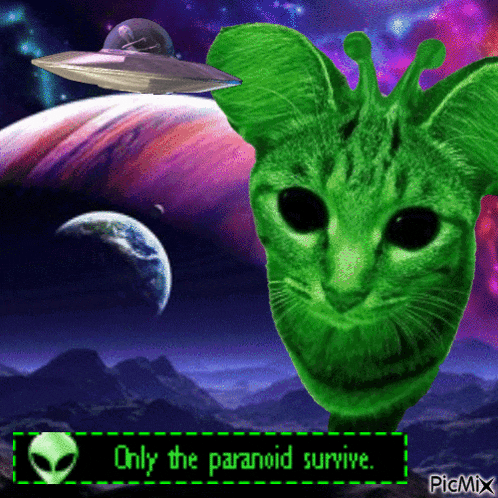
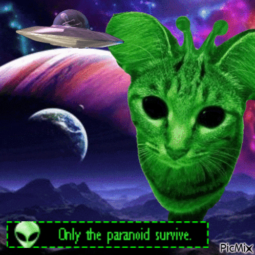
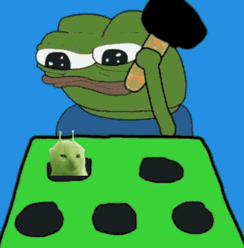
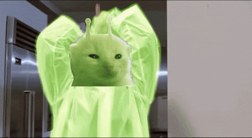
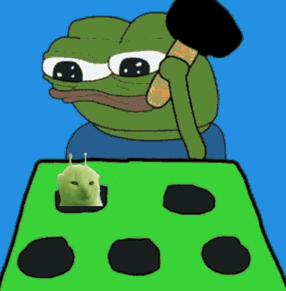
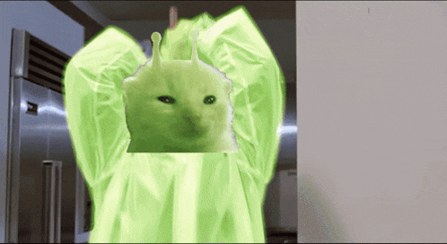

 



Aliens Are Glorping Real.
They are not like us.
Aliens have Invaded.
Gleep Glorp visitors from outerspace are real and they are apart of a Galactic Empire.
Former Canadian Minister of Defense Paul Hellyer publicly stated that multiple extraterrestrial species have been visiting Earth for decades and that world governments—particularly the United States—are aware of their presence. He claimed that some aliens resemble humans closely enough to blend in undetected, while others possess advanced technologies that could revolutionize energy and transportation. Hellyer asserted that secrecy around these beings stems from geopolitical and economic concerns, as well as a desire to maintain control over advanced alien technology.
In 2020, Haim Eshed, former head of Israel's space security program, claimed that the U.S. and Israel have been in contact with extraterrestrials for years. He alleged that a "Galactic Federation" exists and that these beings prefer to remain undisclosed until humanity is ready. Eshed also suggested that aliens have cooperated with American authorities on scientific projects and that a secret underground base exists on Mars where joint human-alien research is conducted.
With these ridiculous claims, I can understand how crazy it sounds when these officials talk openly about galactic federations like this is a fucking game of Stellaris and we are a pre-FTL civilization, how Alien species are cooperating with nations, and UAP retrival programs actively being disclosed with the general public. I think there is something here and I dont think it is a coincidence.
Regarding UAPs, the U.S. government has shown increased transparency. In 2020, a COVID-19 relief bill included a provision mandating the Pentagon to investigate over 120 UAP sightings by military pilots. This led to a 2021 Department of Defense report that concluded the objects were not U.S. military aircraft but could not determine if they were of hostile foreign origin.
Keep in mind, the only reason why the Pentagon declassified these videos in 2004 was becauase it was previously leaked and they had no choice! Its gotta be the worst kept secret but because of the contraversy with aliens and its history, literally no one takes it seriously.
Trump recently talked about UAPs on Joe Rogan's podcast back in 2024, mentioning that he’s been briefed on them and heard reports from credible sources, like pilots, who’ve witnessed strange objects moving at insane speeds. He didn’t confirm contact with aliens, but his comments do raise questions about what the U.S. government knows. It’s clear they’ve been looking into UAPs for a while, and Trump’s words suggest there’s more info out there that hasn’t been made public yet. While it doesn't prove we've had contact with aliens, it definitely keeps the conversation going.
the UAP retrieval program is a secret military operation where the U.S. has been recovering and studying strange, non-human technology. One key story comes from Jacob Barber, a former U.S. Air Force airman, who described seeing an egg-shaped object with no engines—definitely not anything man-made. This ties into a larger pattern of military pilots, including a helicopter crew, capturing footage of UAPs. One infamous clip shows a UAP flying way too fast to be a normal aircraft. The program’s existence has raised a lot of questions about what the government really knows and what’s being kept from the public.
In SRS #66 (Part 1), Michael Herrera, a former U.S. Marine, reveals an intense and unsettling experience that seems straight out of a sci-fi thriller. While on a black ops mission, Herrera allegedly uncovered a UFO-related operation tied to human trafficking. He describes how this operation was not just about aliens, but also involved shady government dealings and dark secrets. Herrera's testimony suggests a deep connection between UFOs and covert military operations, leading him to question everything he thought he knew. It’s a wild, jaw-dropping story that brings new depth to the UFO phenomenon and its connection to global conspiracies. If you’re into mind-bending conspiracy theories or UFO lore, this is a must-listen.